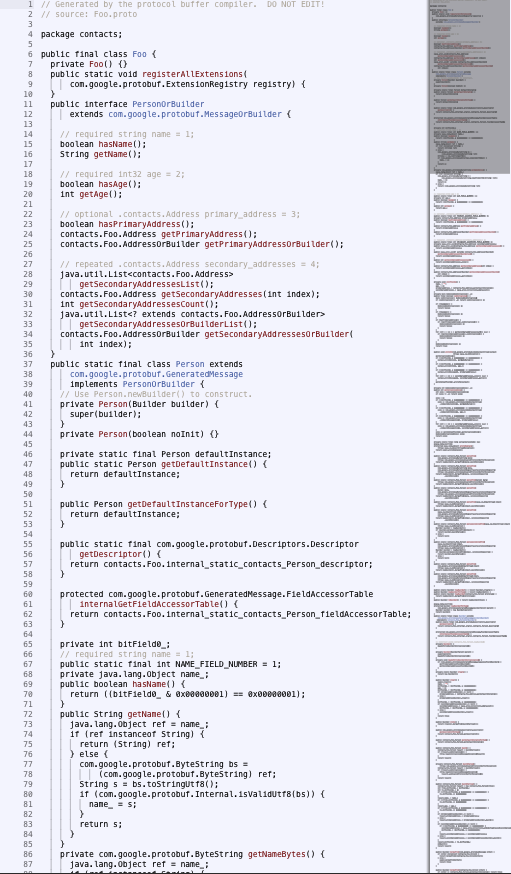

Convert these 15 lines...
package contacts;
message Person {
required string name = 1;
required int32 age = 2;
optional Address primary_address = 3;
repeated Address secondary_addresses = 4;
}
message Address {
required string country = 1;
required string city = 2;
required string zip = 3;
required string street = 4;
}
...into ~1600 lines

Simple Build Tool
http://github.com/harrah/xsbt
Definition
val protobufConfig = config("protobuf")
Shell
sbt> show protobuf:version
Code
version in protobufConfig
sbt.Keys
val sourceDirectory : sbt.SettingKey[java.io.File]
val javaSource : sbt.SettingKey[java.io.File]
val version : sbt.SettingKey[String]
sourceDirectory in protobufConfig <<=
(sourceDirectory in Compile) { _ / "protobuf" }
/* src/main */
javaSource in protobufConfig <<=
(sourceManaged in Compile) { _ / "protobuf" }
/* target/scala_x.y.z */
version in protobufConfig := "2.4.1"
val includePaths = SettingKey[Seq[File]]("include-paths")
Add our proto source directory by default:
includePaths in protobufConfig <<=
(sourceDirectory in protobufConfig) map (identity(_) :: Nil),
object ProtobufPlugin extends Plugin {
val protobufConfig = config("protobuf")
val includePaths = SettingKey[Seq[File]]("include-paths")
lazy val protobufSettings: Seq[Setting[_]] = inConfig(protobufConfig)(Seq(
sourceDirectory <<= (sourceDirectory in Compile) { _ / "protobuf" },
javaSource <<= (sourceManaged in Compile) { _ / "compiled_protobuf" },
version := "2.4.1",
includePaths <<= sourceDirectory map (identity(_) :: Nil)
)) ++ Seq(
libraryDependencies <+=
(version in protobufConfig)("com.google.protobuf" % "protobuf-java" % _)
)
}
Declaration
val generate = TaskKey[Seq[File]]("generate")
generate in protobufConfig <<= sourceGeneratorTask()
Register as source generator
sourceGenerators in Compile <+= (generate in protobufConfig).identity
def sourceGeneratorTask =
(streams,
sourceDirectory in protobufConfig,
javaSource in protobufConfig,
includePaths in protobufConfig,
cacheDirectory) map {
(out, srcDir, targetDir, includePaths, cache) => ...
}
(out, srcDir, targetDir, includePaths, cache) =>
val cachedCompile = FileFunction.cached(cache / "protobuf",
inStyle = FilesInfo.lastModified,
outStyle = FilesInfo.exists) {
(in: Set[File]) => compile(srcDir, targetDir, includePaths, out.log)
}
cachedCompile((srcDir ** "*.proto").get.toSet).toSeq
def compile(srcDir: File, target: File, includePaths: Seq[File], log: Logger) = {
val schemas = (srcDir ** "*.proto").get
val incPath = includePaths.map(_.absolutePath).mkString("-I", " -I", "")
<x>protoc {incPath} --java_out={target.absolutePath} {schemas.map(_.absolutePath).mkString(" ")}</x> ! log
(target ** "*.java").get.toSet
}
No need to create a clean task.
cleanFiles <+= (javaSource in protobufConfig).identity,
WARNING: Don't set it to src/main/java if you value its content!
Now go and convert your builds to sbt-0.10.x ;)